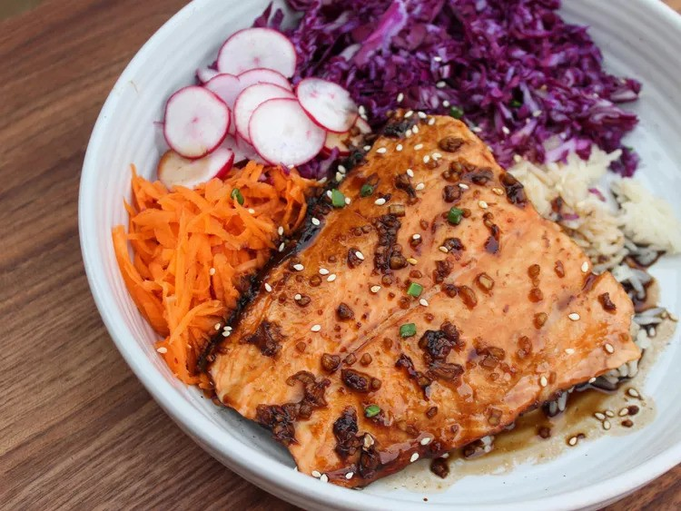

Teriyaki Salmon Bowl

Description
A Teriyaki Salmon Bowl is a flavorful and healthy dish that features grilled or pan-seared salmon glazed with a sweet and savory teriyaki sauce. The salmon is typically served over a base of rice, often accompanied by fresh vegetables like steamed broccoli, edamame, carrots, or avocado. The dish is garnished with sesame seeds, green onions, or pickled ginger, creating a balanced meal that's rich in flavor and nutrients. It's a popular choice for a wholesome, satisfying lunch or dinner.
Ingredients
- Soy sauce
- Brown sugar
- Garlic
- Fresh ginger
- Salmon filet
- Grated carrots
- Shredded red cabbage
- Cooked rice
- Sesame seeds
- Green onions
Steps
- Preheat the oven to 400 degrees F (200 degrees C) and spray a baking dish with cooking spray.
- Combine soy sauce, brown sugar, garlic, and ginger in a small bowl. Place the salmon in the prepared baking dish, skin side down. Pour teriyaki sauce over.
- Bake in the preheated oven until fish flakes easily with a fork, 12 to 15 minutes.
- Place rice in a bowl, top with salmon, and spoon over teriyaki sauce from the baking dish. Add in the shredded cabbage, and grated carrots. Sprinkle with sliced green onions and sesame seeds, to garnish.